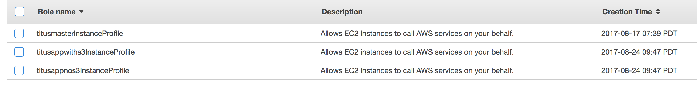
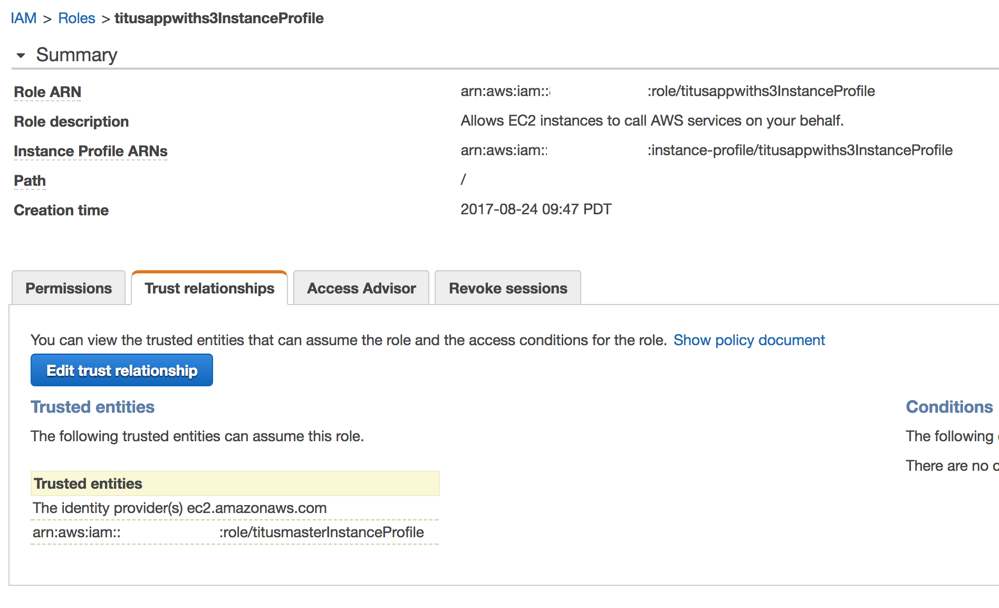
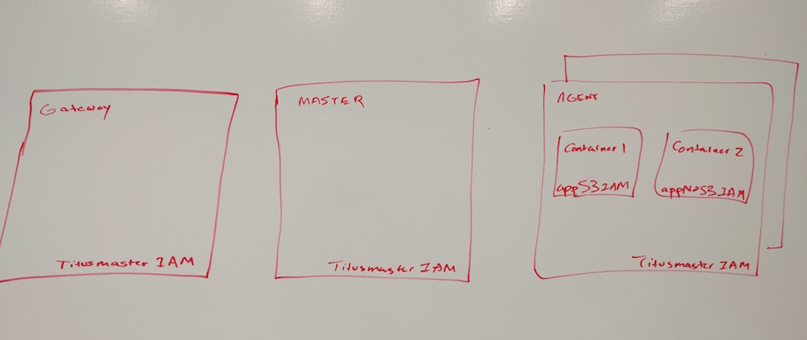

Subnets
The Titus agent must run in a "private subnet" (Amazon terminology), or a Subnet which does not rely on 1:1 NAT for communication across the VPC boundary. This is because the Titus VPC integration code sets up agent IPs in the same subnet that the agent is spawned in, and the containers use secondary Private IPs. The driver does not set up any kind of NAT on these secondary IPs, so they are without ingress connectivity.
VPC Setup
In the most minimal Titus install, you need to create a VPC with a "public" and "private" subnet. All of your Titus infrastructure will live in the private subnet.
You will not be able to SSH directly into your Titus instances. You need to create a instance with the titusmaster-mainvpc and titusbastions security groups. This instance should be provisioned in the Public subnet(s). You can then go ahead and SSH to this instance with the -A option.
The default Amazon VPC wizard will create this for you. If you need to scale your Titus cluster, you need to copy the configuration of the private subnets, and create one per availability zone.
A slightly more advanced version of this configuration is to configure IPv6 on the private subnet, and use an igw for the IPv6 routing for that subnet, so you can SSH directly to the Titus infrastructure on their IPv6 addresses.
Creating security groups
Three security groups are needed. We are naming them titusbastion, titusapp, titusmaster-mainvpc:

Bastion Security Group
For inbound:
- From anywhere, TCP 22
- From anywhere, All ICMP
Infrastructure security group
This is for the titusmaster-mainvpc security group
For inbound
- From titusmaster-mainvpc security group, ALL TCP, All ICMP
- From anywhere (including Internet), SSH

For outbound
- All traffic

App security group
This is for the titusapp
For inbound and outbound
- Up to your application needs
Overview of the applied security groups
Eventually this is how the security groups you created will be used

Creating IAM Roles
Three IAM roles are needed. We are naming them `titusmasterInstanceProfile' and 'titusappwiths3InstanceProfile' and 'titusappnos3InstanceProfile'.

Infrastructure IAM Role
For now, we are using a wide open IAM role. We can refine this later.

App IAM Roles
You need to allow this IAM Role to be assumed into via the Infrastructure Role. You can do this by setting up trusted relationships. It should look like this:

The Trust relationship should look like:
{
"Version": "2012-10-17",
"Statement": [
{
"Effect": "Allow",
"Principal": {
"Service": "ec2.amazonaws.com"
},
"Action": "sts:AssumeRole"
},
{
"Effect": "Allow",
"Principal": {
"AWS": "arn:aws:iam::ACCOUNTID:role/titusmasterInstanceProfile"
},
"Action": "sts:AssumeRole"
}
]
}
For permissions, pick two sets of permissions that matter to your apps. We created one with S3 read access and one without to be able to test the IAM role support feature.
Overview of the applied IAM Roles
Eventually this is how the IAM roles you created will be used
